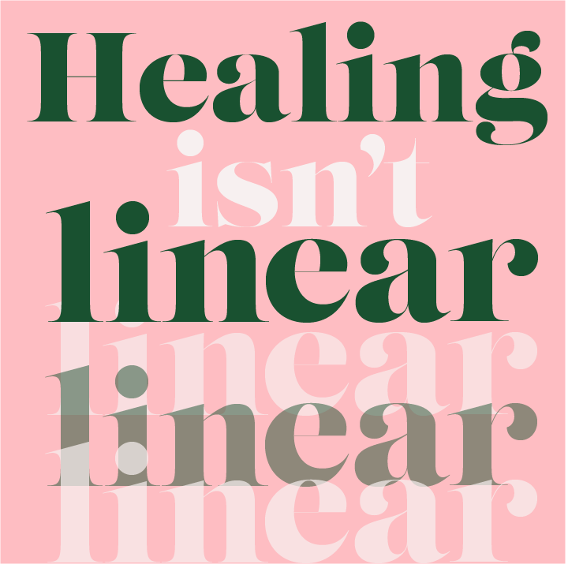

We are here to help!

Pelvic Health Physical Therapy of Morgantown is a clinic specializing in the care and treatment of various orthopedic and neurological problems including a wide range of pelvic disorders. Treatments include one on one personal care in a private, comfortable setting. We are compassionate and determined to help you achieve your individual goals to regain health to live life to the fullest!
"Dr. Winge has helped me regain aspects of my life that I thought were gone. She has helped remind me that healing isn’t linear, and that management is huge part of the process. I am forever grateful to her for giving me hope once again."
Emily D.

Hello, I'm
Dr. Kerry Winge
I believe that both dysfunction and healing are multifactorial. True recovery is only achieved by treating the body as a whole, and providing management tools for ongoing wellness.
Dr. Kerry Winge, PT, DPT, is a physical therapist serving the surrounding areas of Morgantown. She is a board certified Women's Clinical Specialist who has treated thousands of patients over 25 years. Her expertise at treating complex musculoskeletal and global chronic pain conditions, inlcuding sexual dysfunction disorders is unsurpassed.

- At first, I was scared and skeptical. I didn’t know this type of therapy existed — or that I needed it. You are in good hands with Dr. Winge!
- Mary F.